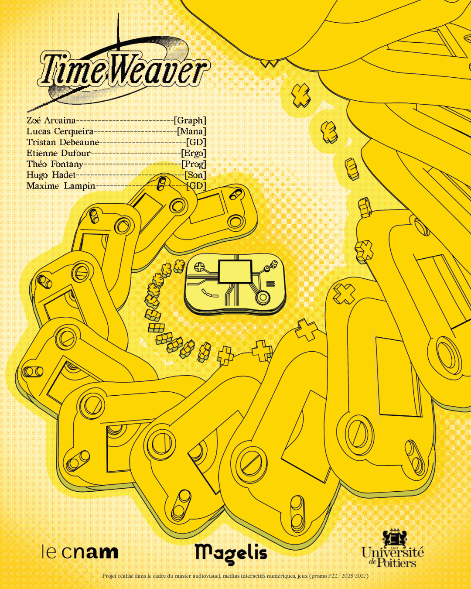
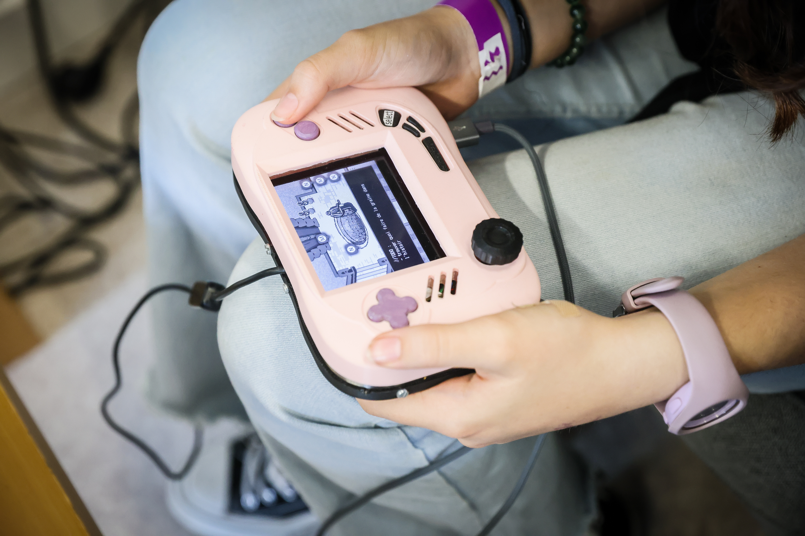
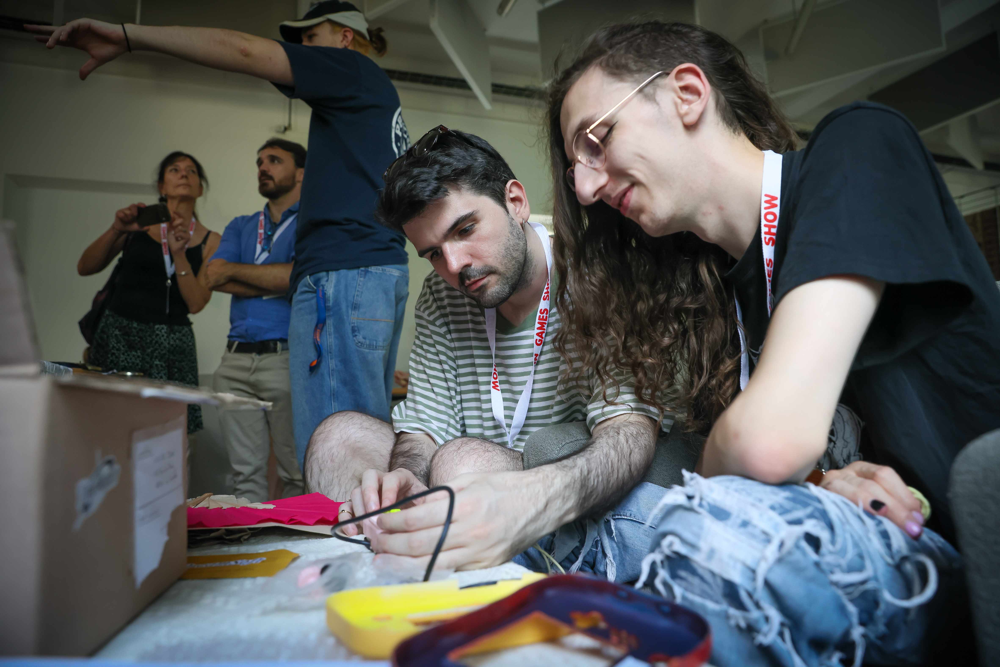
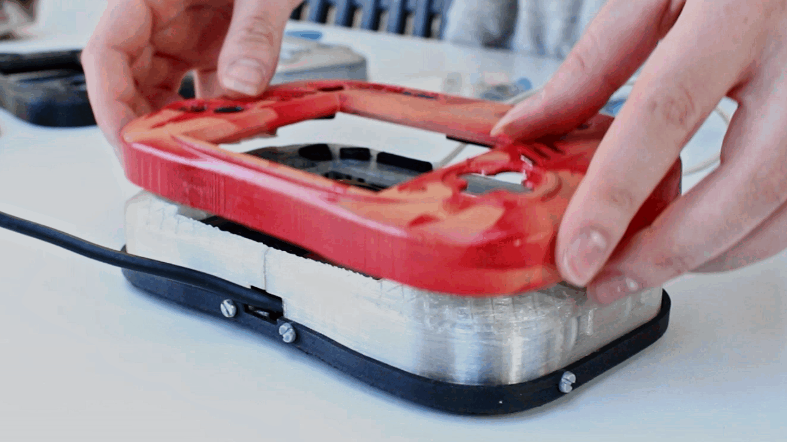

TimeWeaver
Une expérience
alt. narrative
TimeWeaver est une expérience narrative alternative se jouant à l'intérieur d'une console portable fictive.
Manipulez et réparez la console pour progresser dans le jeu qui se trouve à l'intérieur. Jonglez entre ces deux espaces de jeu,
physique et numérique, pour progresser dans l'expérience.
Retracez l’histoire d'un studio et d’un développement
de jeu à travers une console portable abandonnée. Qui sont les personnes derrière ce projet ? Comment le projet a-t-il échoué ?


Groupe de 7 personne,
rôle d’ux/ur et designer objet
Le projet à été réalisé sur une période de 3 mois en fin de mon Master 1 à l’ENJMIN.
Nous étions 7 personnes : 2 game designers, 1 game artist, 1 sound designer,
1 développeur, 1 manager et moi même.
En tant qu’ergonome et UX designer, je travaillais très proche des game designer
pour penser l’expérience et nous assurer que les utilisateurs la percevaient
réellement comme espéré. J’ai également joué le rôle de designer objet, concevant
l’esthétique de la console, me chargeant de son impression en 3D et du montage
électronique complexe se trouvant à l’intérieur.
La console comme contrôleur alt.
Dans ce projet de contrôleur alternatif, les enjeux d’ergonomie étaient omniprésents. J’ai porté une attention particulière à l’intuitivité des différents systèmes, qu’ils soient physiques ou dans le software.

De plus, notre jeu raconte l’histoire d’un studio fictif en proposant à l’utilisateur d’explorer les différentes versions de leur jeu incomplet. Un double niveau de narration était donc à expliciter au joueur dès les premiers instants de l’expérience. Pour cela, la phase d’onboarding (moment du déballage du carton contenant l’objet) à été méticuleusement pensée pour expliquer cette mise en abîme.
De même, au sein du jeu lui-même, une attention particulière a été portée sur la différenciation des textes correspondant à des notes de développeurs et les dialogues des pnj eux même créés par nos développeurs fictifs.


Servant discours sur la postérité dans des projets créatifs, le jeu se termine tout de même sur un floutage intentionnel des différents niveaux de narration, allant jusqu'à briser le quatrième mur dans la zone des crédit, mélangeant ceux des développeurs fictifs à ceux de notre propre équipe, et s’adressant directement au joueur comme étant le dernier constructeur de la console.
Beaucoup d’ur et de playtests
En début de projet, un travail d’UR à été effectué et partagé à l’équipe afin d’aligner les visions créatives et de diriger nos choix de design. Plus tard dans le projet, différents playtests ont été menés, avec des prototypes papier, numérique, sans puis avec la console construite.
Design et construction d’une console portable
J’ai engagé un gros travail d'itération visuelle, alternant entre croquis sur papier et impression 3D rapide me permettant d’avoir un ressenti de l’objet en main.

Le design objet était très contraint par l’obligation de faire rentrer les composants électriques à l'intérieur mais aussi les différents “puzzles physiques” proposés au joueur, centraux dans notre expérience.
Jeu hybride
narratif
Nomades est un jeu hybride réalisé dans le cadre de mon mémoire de DNMADE, qui traite de l’association du numérique au tangible dans le contexte des expériences ludiques.
Jeu hybride
narratif
Nomades est un jeu hybride réalisé dans le cadre de mon mémoire de DNMADE, qui traite de l’association du numérique au tangible dans le contexte des expériences ludiques.
Une première expérimentation du jeu analogique solo
Ce projet fut très fut très enrichissant pour la diversité de techniques que celui-ci m’a amené à expérimenter. Il s’agit également d’une des premières formes de jeu analogique jouable en solo que j’ai cherché à créer, sujet qui continue de m'intéresser et vis à vis duquel j’ai d’ailleurs rédigé un mémoire.
Année • 2024
Durée • 3 mois
Contexte • scolaire
Groupe • solo
Outils • Unity, Photoshop